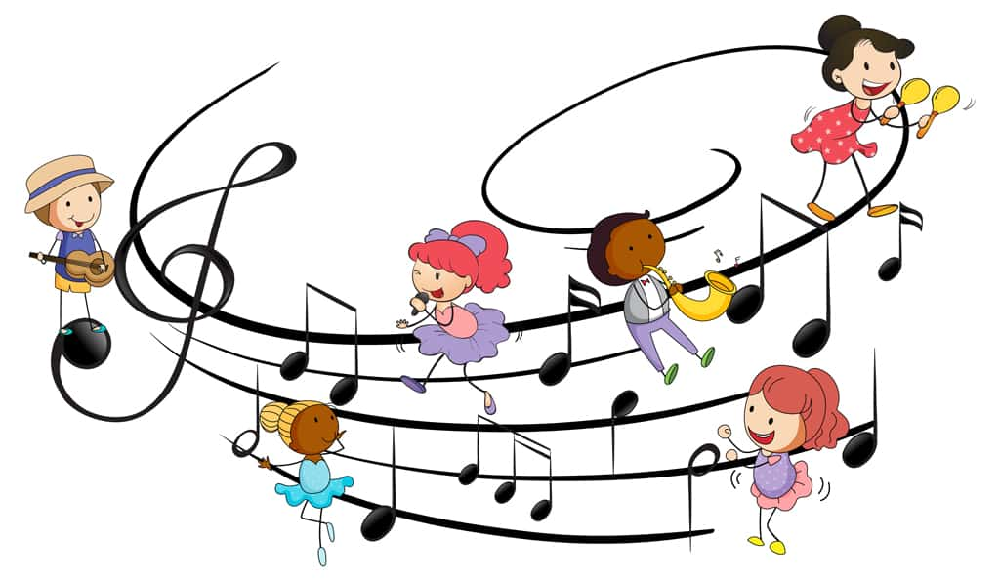
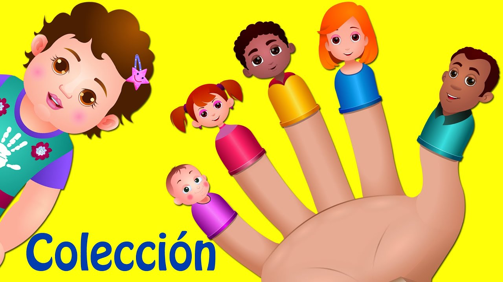
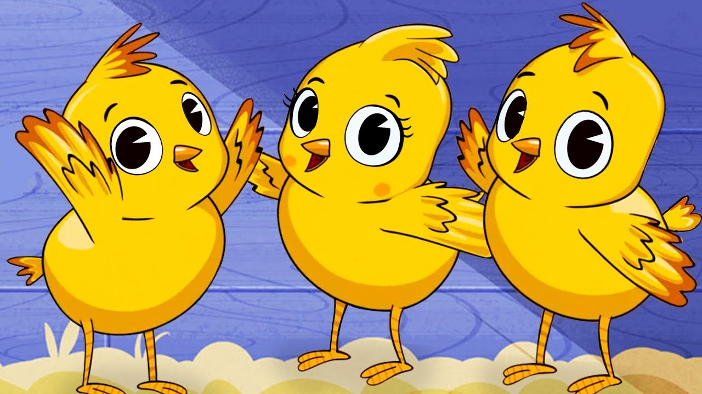
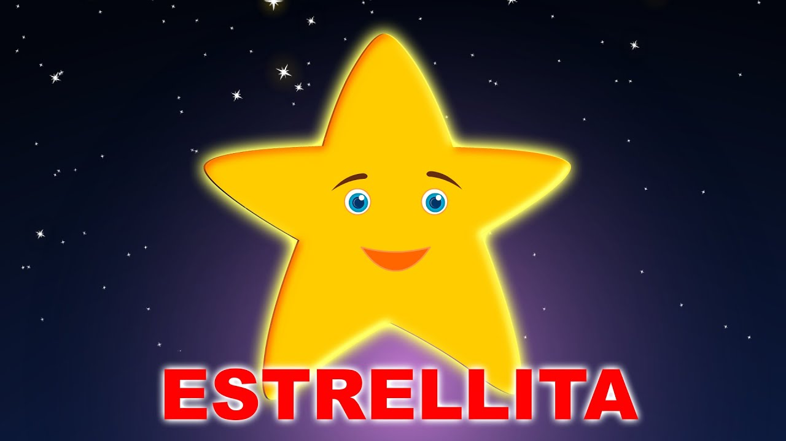

CANCIONES PARA NIÑOS DE 0 A 3 AÑOS
En el desarrollo musical de los niños de 0 a 3 años, se enfoca principalmente en la exploración y la experiencia sensorial. La música desempeña un papel crucial en el desarrollo cognitivo y emocional de los niños en esta etapa temprana. A través de actividades musicales como cantar, bailar y escuchar música, los niños desarrollan habilidades auditivas, coordinación motora y una conexión emocional con el sonido.
Durante este período, se recomienda exponer a los niños a una variedad de estilos musicales y sonidos, ya que esto contribuye a su desarrollo auditivo y a la ampliación de su comprensión del mundo que les rodea. Además, la música suele ser utilizada como una herramienta efectiva para establecer rutinas y ayudar en la creación de un ambiente tranquilo y estimulante para el desarrollo infantil.

Canción de la Familia Dedo
Esta es una canción infantil clásica que involucra a los niños en una actividad divertida y educativa. La canción presenta a los miembros de la familia (dedos) y fomenta la coordinación motora al animar a los niños a mover sus dedos mientras cantan.

Los Pollitos Dicen
Esta tierna canción infantil es popular en muchos países de habla hispana. La melodía sencilla y la letra fácil de recordar hacen que sea ideal para los más pequeños. La canción trata sobre los pollitos y su relación con la mamá gallina, fomentando la participación y el aprendizaje.

Twinkle, Twinkle, Little Star" Estrellita, ¿dónde estás?
Esta es una canción de cuna clásica en inglés que ha sido adaptada en diferentes idiomas. Su melodía suave y repetitiva es perfecta para calmar a los bebés y niños pequeños. Además de brindar una experiencia auditiva agradable, la repetición de la canción contribuye al desarrollo del lenguaje y la memoria en los niños pequeños.
